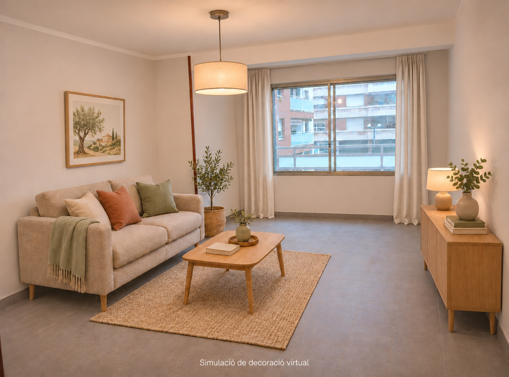
Simulació de decoració virtualQuatre habitacions, llum i pàrquing a dos passos del centre
Un pis reformat, a punt per entrar a viure-hi, al Nou Eixample Nord. Només cal posar-hi els mobles… i la vostra vida.
- 83 m²construïts · 79,8 útils
- 4habitacions
- 2banys
- 1aplanta exterior
- Síascensor
- Inclòsplaça de pàrquing
Així podria ser casa vostra
Hem moblat virtualment el pis a partir de les fotos reals perquè us costi menys imaginar-hi la vida de cada dia. Les parets, el terra, les finestres, la cuina i el bany són els que hi ha.
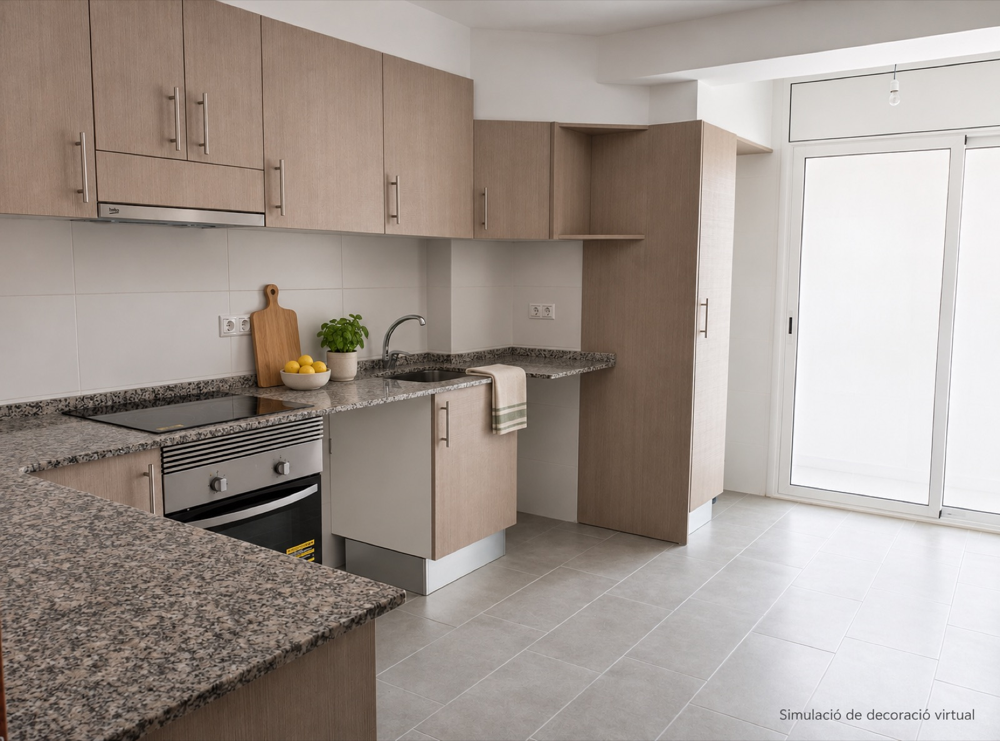
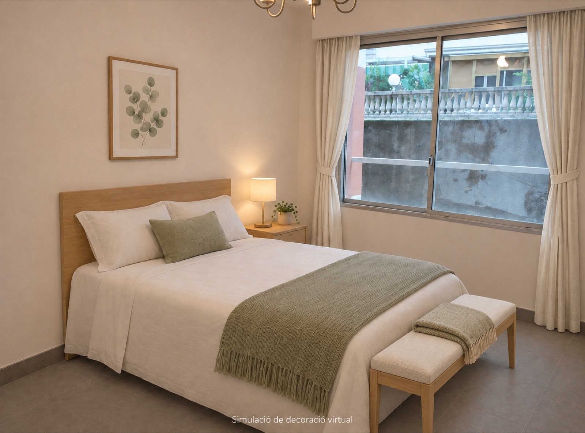
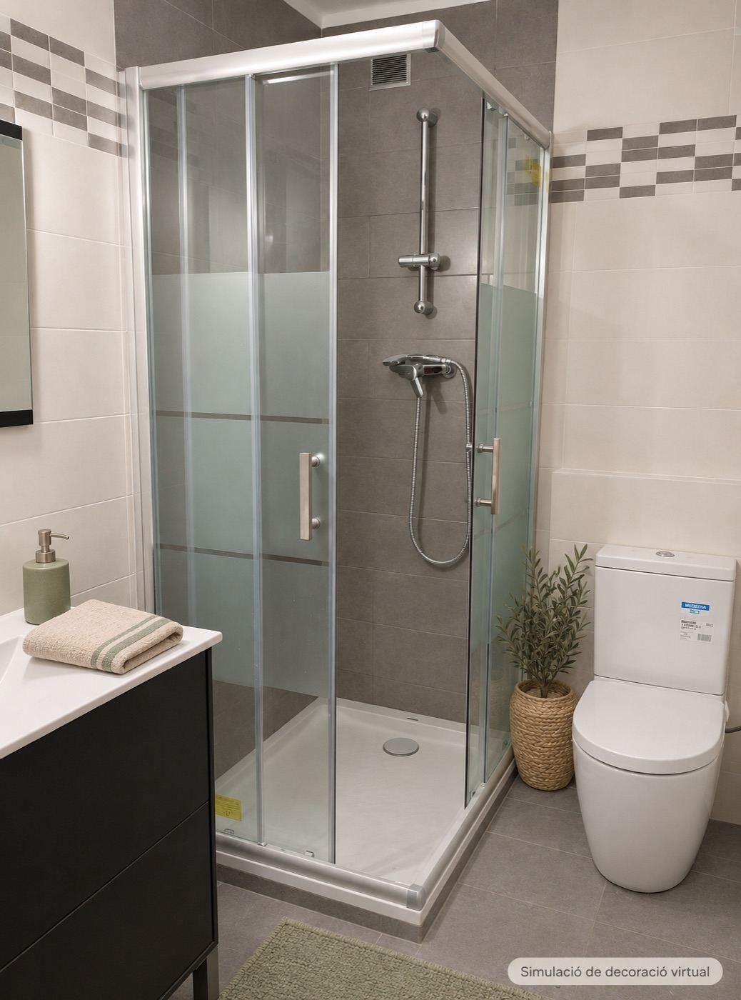
ⓘ Imatges amb decoració virtual: els mobles i complements són simulats; l'habitatge s'entrega buit.
Arrossegueu i compareu
A l'esquerra, la foto real de l'estança buida. A la dreta, la mateixa estança amb mobles. Tot el que no és moble ja hi és.
Tot fet. Llest per entrar a viure.
Un pis al centre de Tarragona, amb aparcament i tots els serveis necessaris per a convertir-lo en la vostra llar.
Reformat a fons
Cuina nova amb vitroceràmica, forn i taulell de granit; dos banys nous i terra de gres a tot el pis.
Pàrquing inclòs
Plaça d'aparcament per a cotxe petit inclosa al preu. A Tarragona, un tresor.
Edifici al dia
Façanes rehabilitades amb certificat final d'obra de l'arquitecte (2016): totes les deficiències de la inspecció tècnica, resoltes.
Exterior i lluminós
Primera planta exterior amb ascensor. Finestres àmplies a totes les habitacions i galeria a la cuina.
Espai per a una família
Quatre habitacions: dues d'entre 8 i 12 m² i dues més petites, perfectes per a fills, despatx o convidats. Bany complet i un segon lavabo.
Papers en regla
Cèdula d'habitabilitat vigent fins al 2041, certificat energètic del 2026 i nota simple recent. Sense sorpreses.
Tal com és, sense filtres
Les fotos de l'habitatge buit, just acabada la reforma, i un recorregut en vídeo per totes les estances.
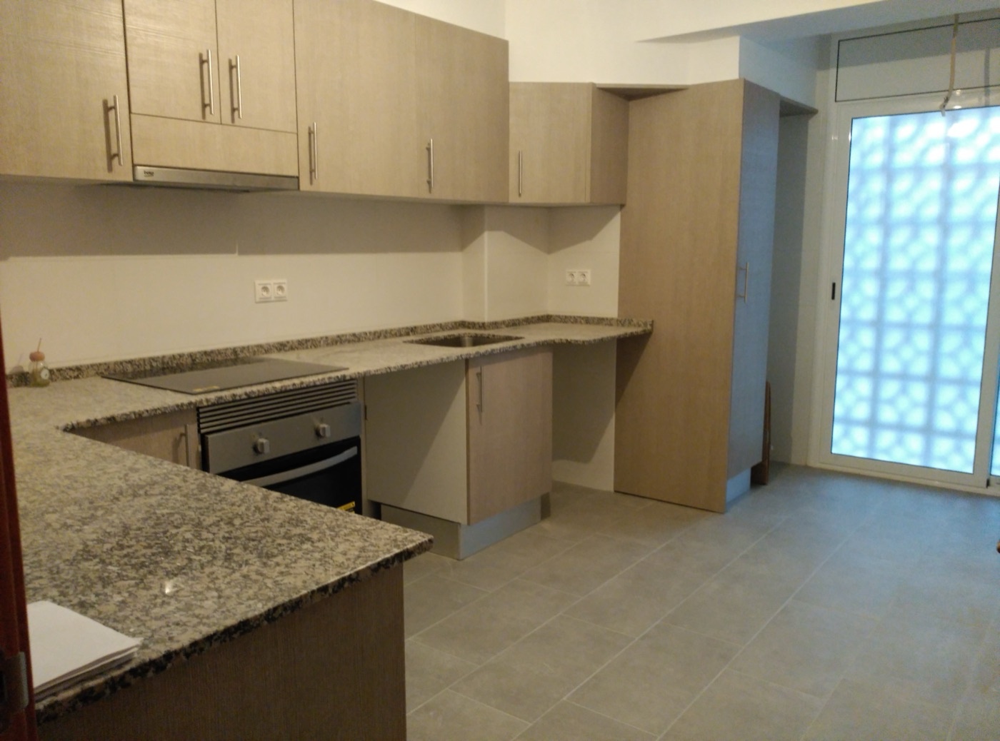
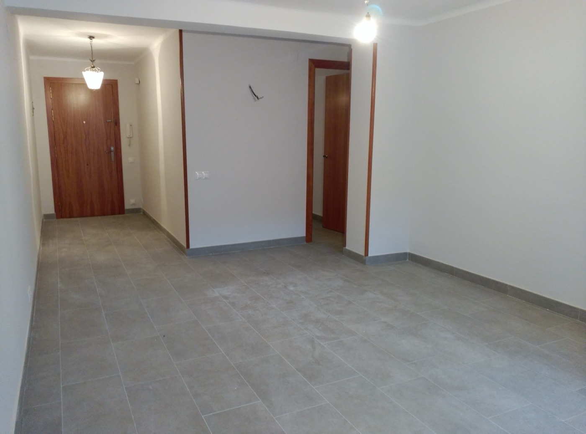
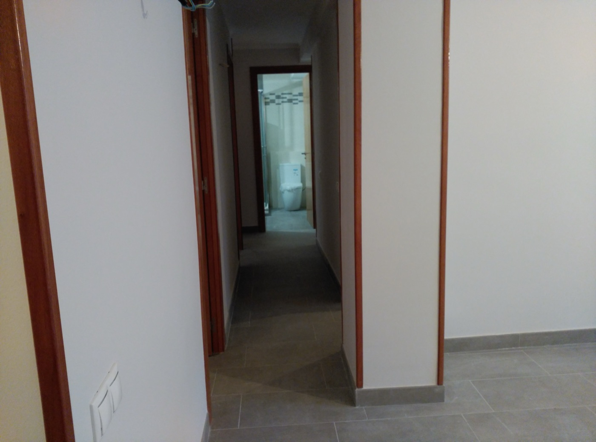
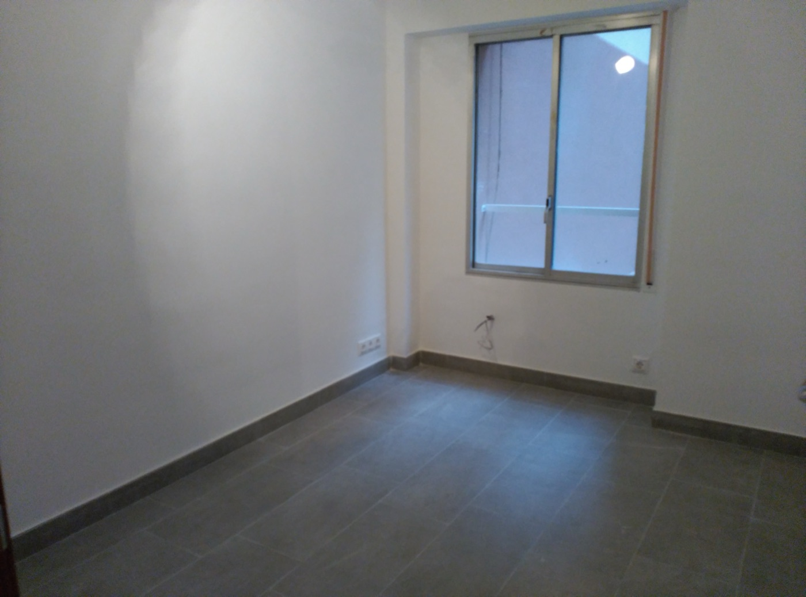
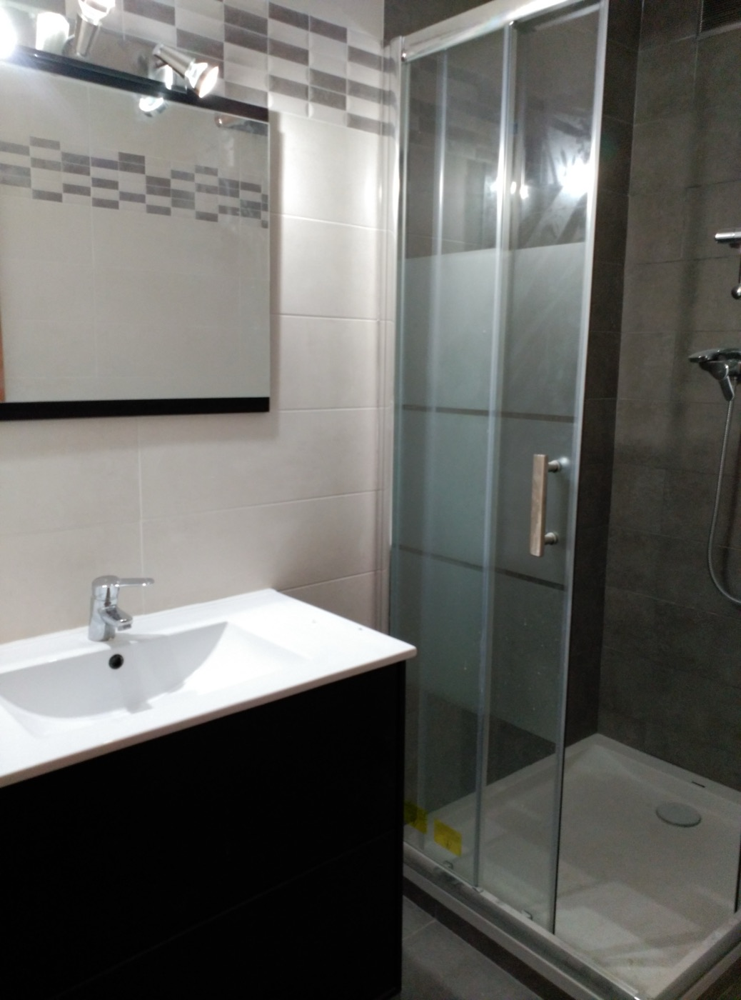
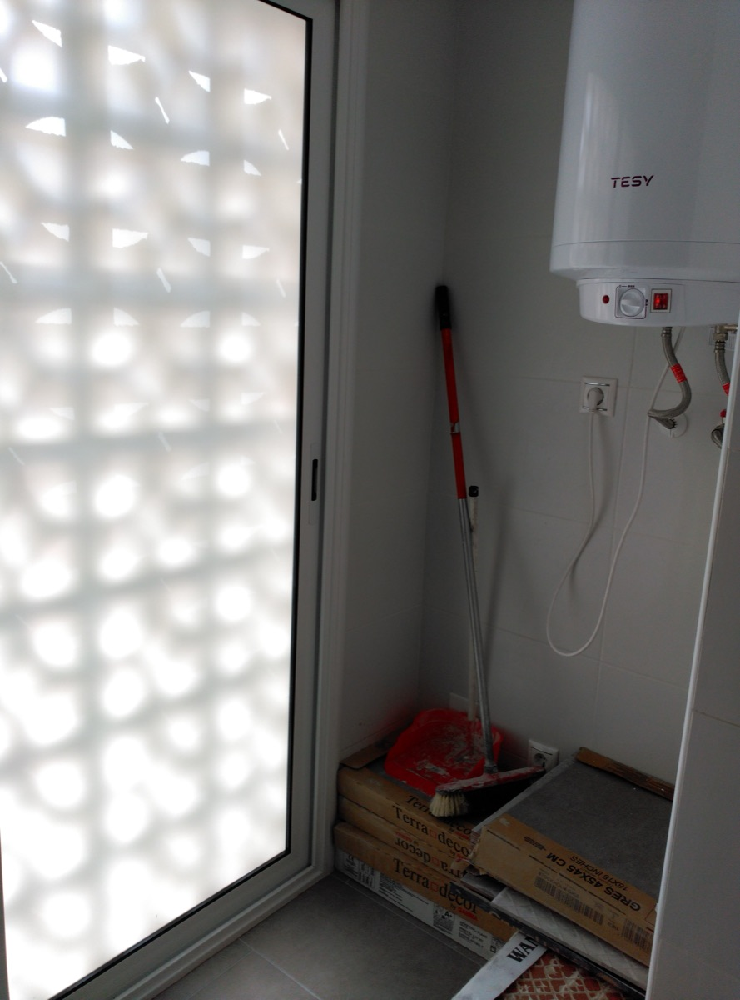
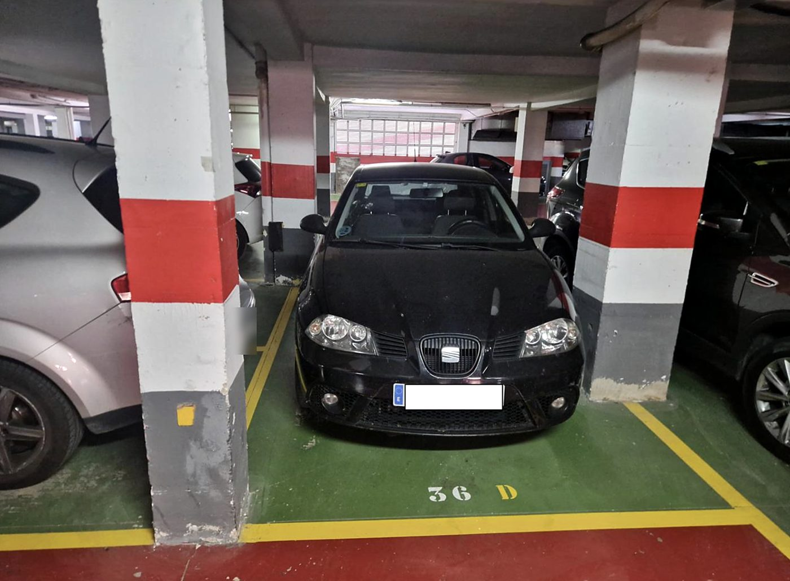
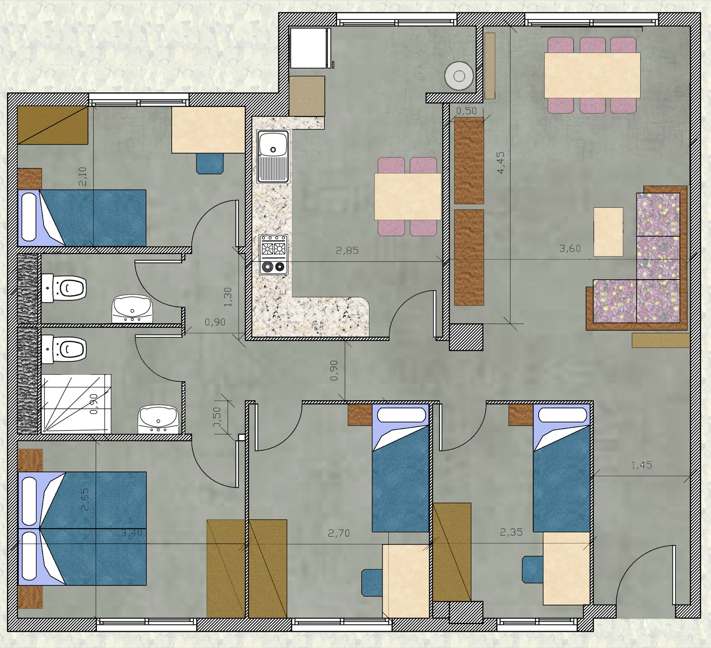
Ben repartit, sense metres perduts
- Menjador · estarexterior, amb finestral
- Cuina officeamb galeria i safareig
- Dormitori principal3,40 × 2,65 m
- Segona habitacióentre 8 i 12 m²
- Dues habitacions mésentre 5 i 8 m²
- Bany completamb dutxa
- Segon lavaboamb rentamans
- Rebedor i passadísdistribuïdor central
Plànol orientatiu amb mobles d'exemple. Superfícies: 83,86 m² segons registre; 79,8 m² útils segons cèdula.
Potser pagareu menys que un lloguer
Moveu els controls per fer-vos una idea de la quota mensual d'una hipoteca. És només una estimació orientativa: a Finques Tarragona us poden orientar sobre finançament i despeses de compra.
El que tothom pregunta
On és exactament?
Al carrer dels Castellers de Tarragona, al barri del Nou Eixample Nord, en un complex residencial a tocar de l'Avinguda Catalunya i a pocs minuts del centre.
La plaça d'aparcament entra al preu?
Sí. Hi ha inclosa una plaça d'aparcament per a cotxe petit. Finques Tarragona us en concretarà les mides i l'accés.
És un pis de protecció oficial? Què vol dir per a mi?
Sí, l'edifici es va qualificar com a habitatge de protecció oficial el 1977. No cal cap autorització per vendre'l i només s'ha de visar el contracte de compravenda. L'única condició és que sigui el vostre habitatge habitual i que no tingueu cap altre habitatge protegit en propietat. Finques Tarragona us ho explicarà amb detall.
Cal fer-hi obres?
No. El pis es va reformar a fons i les façanes de l'edifici es van rehabilitar el 2016. El podeu decorar al vostre gust des del primer dia.
I l'eficiència energètica?
Disposa de certificat energètic vigent (fet el 2026). L'aigua calenta és amb termo elèctric. El certificat inclou recomanacions de millora per si la voleu millorar més endavant; l'agència us en pot ensenyar el document complet.
Com puc visitar-lo?
Truqueu a Finques Tarragona al 977 252 052 o escriviu-los a informa@finquestarragona.com indicant la referència 2744. Us ensenyaran el pis i us resoldran qualsevol dubte.
Veniu a veure'l. Us hi veureu.
Truqueu-los, escriviu-los o passeu per l'oficina de la Rambla Nova: us ensenyaran el pis quan us vagi bé.
Tot el tràmit de compravenda —visites, informació, ofertes, reserva i signatura— es fa exclusivament a través de Finques Tarragona (Jordi Monlleó).
Tot el tràmit de compravenda es fa a través de Finques Tarragona (Jordi Monlleó).
Finques Tarragona
- Oficina
- Rambla Nova, 18, baixos · 43004 Tarragona
- Horari
- De dilluns a divendres, de 9 a 14 h i de 16 a 19 h